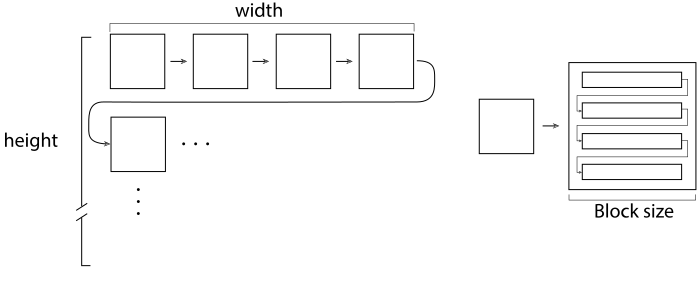

There are two GPU memory architectures: UMA and NUMA.
Desktop PC discrete GPUs are the typical cases of the NUMA architecture where the system memory can be accessed by both the GPU and CPU, while the dedicated video memory can be only accessed by the the GPU.
Desktop PC integrated GPUs, mobile GPUs and console (PlayStation and XBox) GPUs are the typical cases of the UMA architecture where the GPU and CPU share the same memory.
For NUMA GPU, we need to first fill the staging buffer with the initial data, and then issue the GPU command to copy the data from the staging buffer to the destination buffer or image.
For UMA GPU, we can use the CPU to write initial data into the destination buffer or image directly.
This approach works trivially when we are writing into the buffer.
However, the tile mode (VkImageTiling in Vulkan, D3D12_TEXTURE_LAYOUT in Direct3D12) should be considered when we are writing into the image.
The linear tile mode (VK_IMAGE_TILING_LINEAR in Vulkan, D3D12_TEXTURE_LAYOUT_ROW_MAJOR in Direct3D12) is exactly the natural memory layout of the C++ 2D array.
However, by "A.4.4 Blocked 2D Arrays" of PBR Book V3, the linear tile mode is NOT efficient when the 2D texture is indexed by (u, v), since the adjacent locations in the v direction would be on different cache line.
The optimal tile mode (VK_IMAGE_TILING_OPTIMAL in Vulkan, D3D12_TEXTURE_LAYOUT_UNKNOWN in Direct3D12) is the efficient memory layout of which the implementation is vendor dependent.
By "A.4.4 Blocked 2D Arrays" of PBR Book V3, the
Blocked 2D Array can be one implementation.

And by "Figure 23.15" of Real-Time Rendering
Fourth Edition, the Morton sequence can be one implementation.
Since the image is usually in optimal tile mode for better performance, we can NOT simply copy the linear initial data into the image just like how we initialize the buffer.
For UMA GPU, we can use VK_EXT_host_image_copy in Vulkan or ID3D12Resource::WriteToSubresource in Direct3D12 to use the CPU to write initial data into the image directly. These two functions can convert the linear initial data into the optimal tiling mode of the image.
In console, an analog of the the AMD addrlib ac_surface_addr_from_coord can be used.